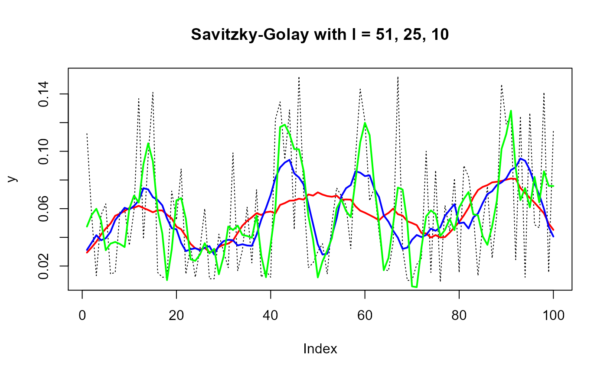

Smoothing of time-series data using Savitzky-Golay convolution smoothing
sg.smooth(x, f = 4, l = 51, d = 1, na.rm, ...)
| x | A vector to be smoothed |
|---|---|
| f | Filter type (default 4 for quartic, specify 2 for quadratic) |
| l | Convolution filter length, must be odd number (default 51). Defines degree of smoothing |
| d | First derivative (default 1) |
| na.rm | NA behavior |
| ... | not used |
A vector of the smoothed data equal to length of x. Please note; NA values are retained
Savitzky, A., and Golay, M.J.E. (1964). Smoothing and Differentiation of Data by Simplified Least Squares Procedures. Analytical Chemistry. 36(8):1627-39
Jeffrey S. Evans <jeffrey_evans<at>tnc.org>
y <- c(0.112220988, 0.055554941, 0.013333187, 0.055554941, 0.063332640, 0.014444285, 0.015555384, 0.057777140, 0.059999339, 0.034444068, 0.058888242, 0.136665165, 0.038888458, 0.096665606,0.141109571, 0.015555384, 0.012222088, 0.012222088, 0.072221428, 0.052221648, 0.087776810,0.014444285, 0.033332966, 0.012222088, 0.032221869, 0.059999339, 0.011110989, 0.011110989,0.042221759, 0.029999670, 0.018888680, 0.098887801, 0.016666483, 0.031110767, 0.061110441,0.022221979, 0.073332526, 0.012222088, 0.016666483, 0.012222088, 0.122220881, 0.134442955, 0.094443403, 0.128887475, 0.045555055, 0.152220547, 0.071110331, 0.018888680, 0.022221979, 0.029999670, 0.035555165, 0.014444285, 0.049999449, 0.074443623, 0.068888135, 0.062221535, 0.032221869, 0.095554501, 0.143331751, 0.121109776, 0.065554835, 0.074443623, 0.043332856, 0.017777583, 0.016666483, 0.036666263, 0.152220547, 0.032221869, 0.009999890, 0.009999890, 0.021110879, 0.025555275, 0.099998899, 0.015555384, 0.086665712, 0.008888791, 0.062221535, 0.044443958, 0.081110224, 0.015555384, 0.089999005, 0.082221314, 0.056666043, 0.013333187, 0.048888352, 0.075554721, 0.025555275, 0.056666043, 0.146665052, 0.118887581, 0.125554174, 0.024444176, 0.124443069, 0.012222088, 0.126665279, 0.048888352, 0.046666153, 0.141109571, 0.015555384, 0.114443190) plot(y, type="l", lty = 3, main="Savitzky-Golay with l = 51, 25, 10")#### function applied to a raster stack and sp object library(raster) random.raster <- function(r=50, c=50, l=10, min=0, max=1){ do.call(stack, replicate(l, raster(matrix(runif(r*c, min, max),r,c)))) } r <- random.raster() # raster stack example ( r.sg <- calc(r, sg.smooth) )#> class : RasterBrick #> dimensions : 50, 50, 2500, 10 (nrow, ncol, ncell, nlayers) #> resolution : 0.02, 0.02 (x, y) #> extent : 0, 1, 0, 1 (xmin, xmax, ymin, ymax) #> crs : NA #> source : memory #> names : layer.1, layer.2, layer.3, layer.4, layer.5, layer.6, layer.7, layer.8, layer.9, layer.10 #> min values : 0.1141054, 0.1207014, 0.1256262, 0.1287881, 0.1301289, 0.1296240, 0.1272820, 0.1231456, 0.1172904, 0.1098259 #> max values : 0.4505769, 0.4798432, 0.5024851, 0.5180846, 0.5263587, 0.5271590, 0.5204720, 0.5064189, 0.4852561, 0.4573744 #># sp SpatialPixelsDataFrame example r.sp <- as(r, "SpatialPixelsDataFrame") r.sp@data <- as.data.frame(t(apply(r.sp@data, MARGIN=1, FUN=sg.smooth)))